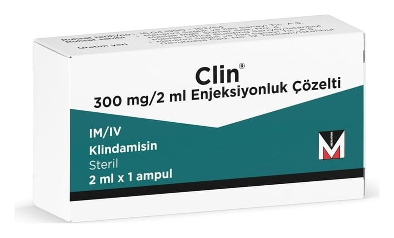

Clin 300 mg/2 ml Enjeksiyonluk Çözelti, 1 Adet

Ne için kullanılır
KT · Bölüm 1●CLİN, kas veya damar içine uygulanan berrak, renksiz steril çözeltidir. ●CLİN, ciddi bakteriyel enfeksiyonların tedavisinde kullanılan bir antibiyotik olan klindamisin fosfat içerir. Kutu içerisinde 2 mL’lik 1 adet tip I cam ampul şeklinde bulunur.